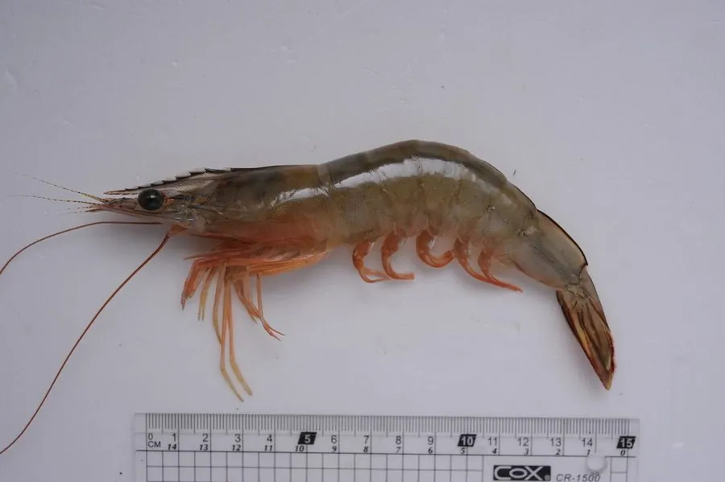

甲壳动物 · 动物界
墨吉对虾 Fenneropenaeus merguiensis

体色淡黄半透明的大中型对虾，额角细长、尾扇带黄，是印度洋至西太平洋重要的养殖与捕捞虾种。
- 分类
- 门节肢动物门纲软甲纲目十足目科对虾科属明对虾属
- 栖息环境
- 泥沙底质浅海、河口与红树林边缘
- 地理分布
- 印度洋至西太平洋沿岸，中国南海及澳大利亚北部
- 保护级别
- 重要经济虾类，野生资源受捕捞压力，养殖规模较大
物种志
墨吉对虾的雌虾体长可达二十厘米，雄虾略小。体色淡黄而半透明，甲壳薄，额角细长，上缘有齿，第一触角鞭特别长。步足淡黄，尾扇带黄色，煮熟后通体橙红。它的身体侧扁，腹部各节分明，善于在水中快速弹跳逃避敌害，跳起时腹部急剧弯曲，能连跳数次。
它分布于印度洋至西太平洋沿岸，从波斯湾、印度到中国南海和澳大利亚北部都有，栖息在泥沙底质的浅海和河口。成虾在较深海域产卵，幼虾则进入红树林和河口育肥，以底栖小动物和有机碎屑为食，夜间活动。由于生长快、肉质好，它是东南亚和中国南方重要的养殖虾类，养殖规模扩大会带来红树林占用和病害传播等问题。
形态与习性
- 体长雌虾可达二十厘米，雄虾略小
- 体色淡黄半透明，尾扇带黄
- 额角细长，上缘具齿
- 食性底栖小动物与有机碎屑，夜间活动
- 生活史幼虾在河口红树林育肥，成虾外海产卵
- 经济东南亚与中国南方重要养殖虾种
趣味知识
- 它活着时半透明发黄，一入锅就变成通体橙红，颜色来自甲壳里的色素。
- 幼虾把红树林的根系当托儿所，长大了才游向外海。
- 受惊时它把腹部猛地一弯，能连跳好几下，从水面弹开。